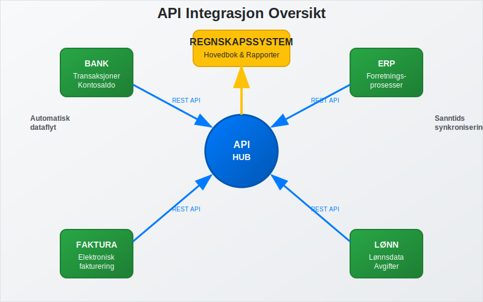
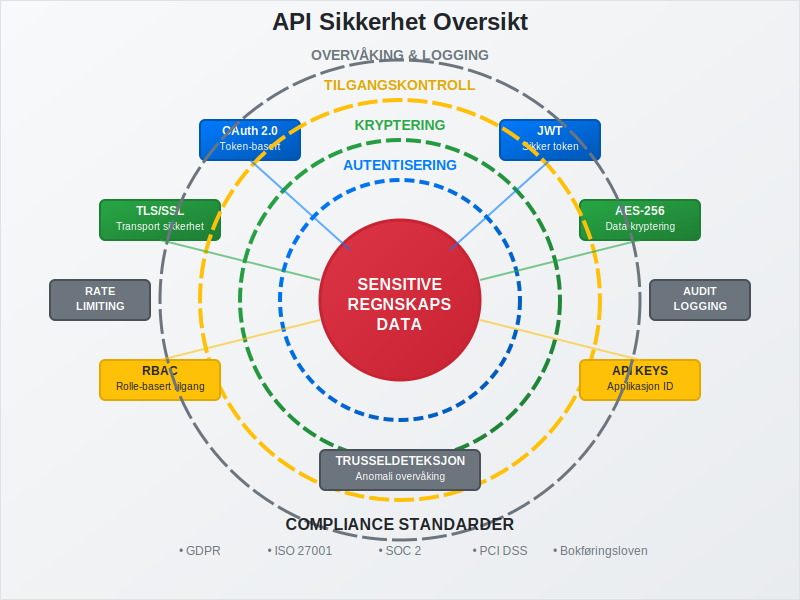
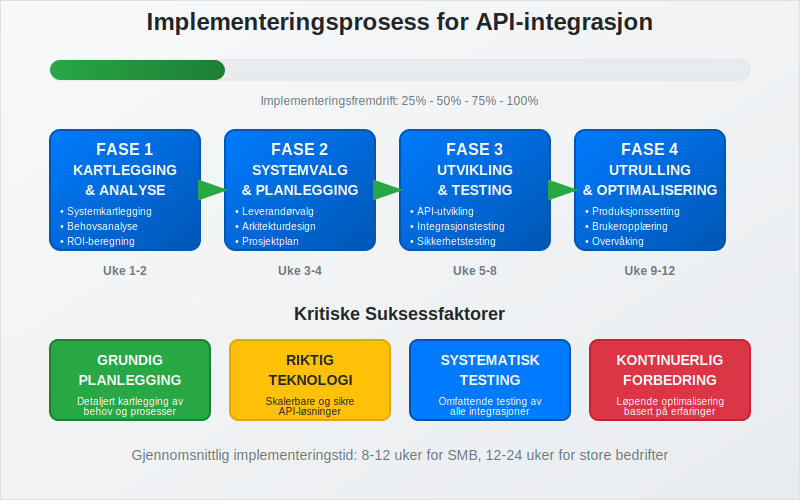
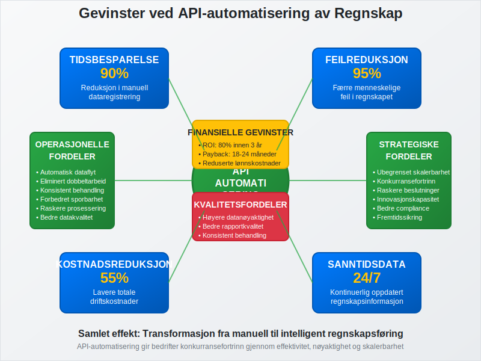
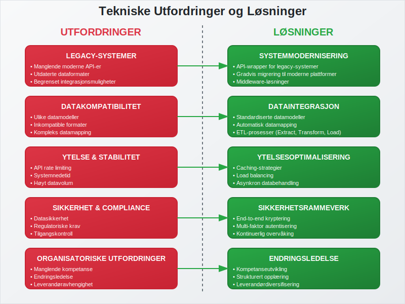
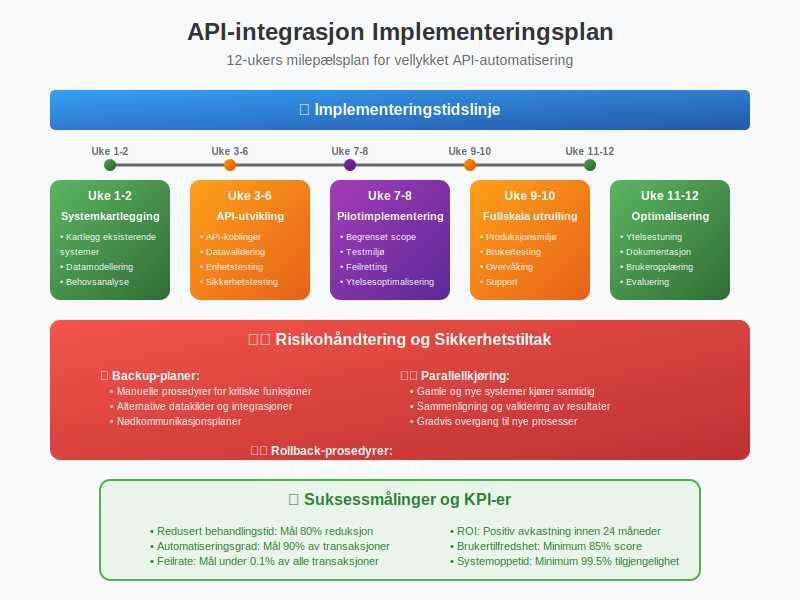

API-integrasjon og automatisering av regnskap representerer fremtiden for moderne regnskapsføring, hvor teknologi eliminerer manuelle prosesser og skaper sømløs dataflyt mellom ulike forretningssystemer. For norske bedrifter betyr dette en revolusjon i hvordan regnskap håndteres, fra tradisjonell manuell bokføring til fullstendig automatiserte regnskapsprosesser.
Se også: Databriller i Regnskap.
Se også: Integrasjon.
Se også: Hva er Betalingstjenestedirektivet (PSD2)?.
Seksjon 1: Grunnleggende Konsepter og Definisjon
API (Application Programming Interface) er grensesnittet som lar ulike programvarer kommunisere og utveksle data automatisk. I regnskapssammenheng fungerer API-er som digitale broer som kobler sammen ERP-systemer, regnskapsprogrammer, banker, og andre forretningsapplikasjoner.

1.1 Hva er API-integrasjon i Regnskap?
API-integrasjon i regnskapsføring innebærer automatisk overføring av finansielle data mellom ulike systemer uten menneskelig inngripen. Dette inkluderer:
- Banktransaksjoner: Automatisk import av banktransaksjoner direkte til regnskapssystemet
- Fakturabehandling: Sømløs integrasjon med elektronisk fakturering
- Lagerdata: Automatisk integrasjon med strekkoder og lagerstyringssystemer
- Lønnsdata: Automatisk overføring fra lønnssystemer til hovedbok
- Rapportering: Sanntids finansiell rapportering og analyse
1.2 Automatisering vs. Tradisjonell Regnskapsføring
Sammenligning mellom tradisjonelle og automatiserte regnskapsprosesser:
| Aspekt | Tradisjonell Metode | API-automatisert Metode |
|---|---|---|
| Dataregistrering | Manuell inntasting | Automatisk import |
| Feilrisiko | Høy (menneskelige feil) | Lav (systemvalidering) |
| Tidsbruk | Timer/dager | Minutter/sanntid |
| Kostnad | Høy arbeidskostnad | Lav driftskostnad |
| Skalerbarhet | Begrenset | Ubegrenset |
| Rapportering | Periodisk | Sanntid |

Seksjon 2: Tekniske Løsninger og Arkitektur
Moderne API-integrasjoner bygger på robuste tekniske fundamenter som sikrer pålitelighet, sikkerhet og skalerbarhet.
2.1 API-typer i Regnskapsintegrasjon
REST API-er dominerer regnskapssektoren på grunn av sin enkelhet og fleksibilitet:
- GET: Henter data (f.eks. kontosaldo, transaksjonshistorikk)
- POST: Oppretter nye poster (bilag, fakturaer)
- PUT/PATCH: Oppdaterer eksisterende data
- DELETE: Sletter poster (med revisjonsspor)

2.2 Dataformater og Standarder
Regnskapsdata utveksles typisk i standardiserte formater:
- JSON: Mest brukt for moderne API-er
- XML: Tradisjonelt format, fortsatt brukt i EHF og offentlige systemer
- CSV: Enkel import/eksport av tabelldata
- XBRL: Standardisert rapportering til offentlige myndigheter
2.3 Sikkerhet og Autentisering
API-sikkerhet er kritisk for regnskapsdata:
Autentiseringsmetoder:
- OAuth 2.0: Industristandard for sikker tilgangskontroll
- API-nøkler: Enkel identifikasjon av applikasjoner
- JWT-tokens: Sikker overføring av brukerinformasjon
- TLS/SSL: Kryptering av datatransmisjon
- Tofaktorautentisering: Ekstra sikkerhetslag for API-tilgang

Seksjon 3: Implementering og Integrasjonsprosess
Vellykket implementering av API-integrasjon krever systematisk planlegging og gjennomføring.
3.1 Implementeringsfaser
Fase 1: Kartlegging og Analyse
- Identifiser eksisterende systemer og dataflyt
- Analyser integrasjonsbehov og prioriteringer
- Vurder teknisk infrastruktur og kompetanse
Fase 2: Systemvalg og Planlegging
- Velg kompatible systemer med robuste API-er
- Definer datamodeller og mappingstrategier
- Planlegg testing og utrullingsstrategier
Fase 3: Utvikling og Testing
- Implementer API-koblinger og datavalidering
- Gjennomfør omfattende testing av alle integrasjoner
- Etabler overvåking og feilhåndtering
Fase 4: Utrulling og Optimalisering
- Gradvis migrering fra manuelle til automatiserte prosesser
- Opplæring av brukere og etablering av nye rutiner
- Kontinuerlig optimalisering basert på erfaringer

3.2 Vanlige Integrasjonsscenarier
Bankintegrasjon:
Automatisk import av banktransaksjoner eliminerer manuell registrering og reduserer feil betydelig. Moderne bankAPI-er tilbyr:
- Sanntids transaksjonsfeed
- Automatisk kategorisering basert på historikk
- Integrasjon med bankavstemming
Disse API-er bygger på infrastrukturen til moderne betalingstjenester, som gjør det mulig å integrere direkte med banker og betalingsformidlere for sanntids dataflyt.
Fakturaautomatisering:
Fakturatolk og OCR-teknologi kombinert med API-er muliggjør:
- Automatisk lesing og tolking av innkommende fakturaer
- Validering mot bestillinger og kontrakter
- Automatisk bilagsføring og godkjenningsflyt
Lønnsintegrasjon:
Sømløs kobling mellom lønnssystem og regnskap sikrer:
- Automatisk journalføring av lønnskostnader
- Korrekt håndtering av arbeidsgiveravgift
- Integrert rapportering til Altinn
Seksjon 4: Fordeler og Gevinster
API-integrasjon og automatisering gir betydelige fordeler for norske bedrifter på flere områder.
4.1 Operasjonelle Fordeler
Tidsbesparelse:
- 90% reduksjon i tid brukt på dataregistrering
- Sanntids oppdatering av regnskapsdata
- Eliminering av dobbeltarbeid mellom systemer
Kvalitetsforbedring:
- Reduserte feil gjennom automatisk validering
- Konsistent databehandling på tvers av systemer
- Forbedret sporbarhet og revisjonsspor

4.2 Økonomiske Gevinster
Kostnad-nytte analyse av API-automatisering:
| Kostnadskategori | Før Automatisering | Etter Automatisering | Besparelse |
|---|---|---|---|
| Lønnskostnader | 100% | 30% | 70% |
| Feilretting | 100% | 20% | 80% |
| Systemvedlikehold | 100% | 120% | -20% |
| Totalkostnad | 100% | 45% | 55% |
4.3 Strategiske Fordeler
Skalerbarhet:
API-baserte løsninger vokser med bedriften uten proporsjonale kostnadsøkninger. Dette er spesielt viktig for:
- Voksende bedrifter med økende transaksjonsvolum
- Sesongbaserte virksomheter med varierende aktivitet
- Bedrifter som ekspanderer til nye markeder
Konkurransefortrinn:
- Raskere beslutningsgrunnlag gjennom sanntidsdata
- Lavere operasjonelle kostnader
- Høyere nøyaktighet i finansiell rapportering
Seksjon 5: Utfordringer og Risikohåndtering
Selv om API-integrasjon gir store fordeler, finnes det utfordringer som må håndteres proaktivt.
5.1 Tekniske Utfordringer
Systemkompatibilitet:
- Legacy-systemer som mangler moderne API-er
- Dataformat-inkompatibilitet mellom ulike systemer
- Versjonshåndtering av API-er over tid
Ytelse og Stabilitet:
- API-begrensninger (rate limiting) som kan påvirke dataflyt
- Nedetid i tredjepartssystemer som stopper automatisering
- Datavolum som kan overbelaste integrasjoner

5.2 Sikkerhet og Compliance
Datasikkerhet:
Regnskapsdata er sensitive og krever høyeste sikkerhetsnivå:
- Kryptering av data i transit og hvile
- Tilgangskontroll med prinsippet om minste privilegium
- Logging og overvåking av alle API-kall
Regulatorisk Compliance:
Norske bedrifter må overholde:
- Bokføringsloven og krav til dokumentasjon
- GDPR for behandling av personopplysninger
- Revisjonsregler for sporbarhet og kontroll
5.3 Organisatoriske Utfordringer
Kompetanse:
- Teknisk kompetanse for implementering og vedlikehold
- Endringsledelse for å få organisasjonen med på omstillingen
- Opplæring av brukere i nye arbeidsmetoder
Leverandøravhengighet:
- Vendor lock-in som kan begrense fremtidig fleksibilitet
- SLA-avtaler som sikrer tilgjengelighet og ytelse
- Exit-strategier for å håndtere leverandørskifte
Seksjon 6: Fremtidige Trender og Teknologier
Regnskapsautomatisering utvikler seg raskt med nye teknologier som former fremtidens løsninger.
6.1 Kunstig Intelligens og Maskinlæring
AI-drevet Kategorisering:
Moderne systemer lærer av historiske data for å:
- Automatisk kategorisere transaksjoner med høy nøyaktighet
- Foreslå konteringsforslag basert på mønstre
- Identifisere avvik og potensielle feil
Prediktiv Analyse:
AI kan forutsi:
- Kontantstrøm basert på historiske mønstre
- Leverandørbetalinger for optimalisert likviditetsstyring
- Sesongvariasjoner i forretningsaktivitet

6.2 Blockchain og Distribuerte Systemer
Smart Contracts:
Automatiserte kontrakter som utfører seg selv når forhåndsdefinerte betingelser oppfylles:
- Automatisk fakturering ved leveranse
- Øyeblikkelig betaling ved kontraktoppfyllelse
- Transparent og uforanderlig transaksjonsspor
Desentralisert Regnskap:
Blockchain-teknologi kan revolusjonere:
- Revisjon gjennom uforanderlige poster
- Tverrbedrift-transaksjoner med redusert friksjon
- Regulatorisk rapportering med økt transparens
6.3 Internet of Things (IoT) Integrasjon
Automatisk Datainnsamling:
IoT-sensorer kan automatisk registrere:
- Lagerendringer for automatisk kostnadsjustering
- Energiforbruk for nøyaktig kostnadsallokering
- Produksjonsdata for sanntids kostnadsregnskap
Et særlig interessant eksempel på IoT-integrasjon finner vi i landbrukssektoren, hvor landbrukets dataflyt demonstrerer hvordan sensorer, maskiner og automatiserte systemer kan skape en helhetlig regnskapsløsning fra jord til regnskap.
Seksjon 7: Implementeringsguide for Norske Bedrifter
Praktisk veiledning for bedrifter som ønsker å implementere API-integrasjon og automatisering.
7.1 Behovsanalyse og ROI-beregning
Kartlegging av Nåsituasjon:
- Tidsregistrering av manuelle regnskapsprosesser
- Feilanalyse av eksisterende rutiner
- Kostnadskartlegging av dagens løsninger
ROI-beregning:
ROI = (Årlige besparelser - Implementeringskostnad) / Implementeringskostnad × 100%
Eksempel:
- Implementeringskostnad: 500,000 kr
- Årlige besparelser: 300,000 kr
- ROI år 1: (300,000 - 500,000) / 500,000 = -40%
- ROI år 2: (600,000 - 500,000) / 500,000 = 20%
- ROI år 3: (900,000 - 500,000) / 500,000 = 80%
7.2 Leverandørvalg og Evaluering
Evalueringskriterier:
| Kriterium | Vekting | Vurderingsfaktorer |
|---|---|---|
| Funksjonalitet | 30% | API-bredde, integrasjonsmuligheter |
| Sikkerhet | 25% | Sertifiseringer, compliance |
| Support | 20% | Norsk support, responstid |
| Kostnad | 15% | Totalkostnad, prismodell |
| Skalerbarhet | 10% | Fremtidig vekstmuligheter |
Referansesjekk:
- Kundecase fra lignende bedrifter
- Implementeringstid og utfordringer
- Langsiktig tilfredshet med løsningen
7.3 Implementeringsplan
Milepælsplan:
- Uke 1-2: Systemkartlegging og datamodellering
- Uke 3-6: API-utvikling og testing
- Uke 7-8: Pilotimplementering med begrenset scope
- Uke 9-10: Fullskala utrulling og brukertesting
- Uke 11-12: Optimalisering og dokumentasjon
Risikohåndtering:
- Backup-planer for kritiske prosesser
- Parallellkjøring under overgangsfasen
- Rollback-prosedyrer ved kritiske feil

Seksjon 8: Måling av Suksess og KPI-er
Effektiv måling av automatiseringsgevinster krever definerte nøkkeltall og oppfølgingsrutiner.
8.1 Operasjonelle KPI-er
Effektivitetsmålinger:
- Behandlingstid per transaksjon: Reduksjon fra timer til minutter
- Automatiseringsgrad: Andel transaksjoner som behandles automatisk
- Feilrate: Reduksjon i manuelle feil og korrigeringer
Kvalitetsmålinger:
- Datakvalitet: Konsistens og nøyaktighet på tvers av systemer
- Compliance-score: Overholdelse av regnskapsstandarder
- Revisjonsspor: Komplett sporbarhet av alle transaksjoner
8.2 Finansielle KPI-er
Kostnadsreduksjon:
- Lønnskostnader: Redusert tid brukt på manuelle oppgaver
- Feilkostnader: Mindre tid brukt på korrigeringer
- Systemkostnader: Optimalisert lisensbruk og infrastruktur
Verdiskaping:
- Raskere rapportering: Tidligere tilgang til beslutningsgrunnlag
- Forbedret kontantstrøm: Raskere fakturabehandling og betaling
- Skalerbarhet: Håndtering av vekst uten proporsjonale kostnadsøkninger
8.3 Strategiske KPI-er
Konkurranseposisjon:
- Time-to-market: Raskere lansering av nye produkter/tjenester
- Kundetilfredshet: Forbedret service gjennom raskere prosesser
- Innovasjonskapasitet: Frigjort ressurser til verdiskapende aktiviteter
Konklusjon
API-integrasjon og automatisering av regnskap representerer en fundamental endring i hvordan norske bedrifter håndterer finansiell informasjon. Gjennom systematisk implementering av moderne teknologiløsninger kan bedrifter oppnå betydelige gevinster i form av reduserte kostnader, forbedret kvalitet og økt konkurranseevne.
Nøkkelsuksessfaktorer:
- Grundig planlegging med fokus på forretningsbehov
- Riktig teknologivalg basert på skalerbarhet og sikkerhet
- Systematisk implementering med risikohåndtering
- Kontinuerlig optimalisering basert på erfaringer og nye teknologier
For bedrifter som ønsker å være konkurransedyktige i fremtidens digitale økonomi, er API-integrasjon og automatisering av regnskap ikke lenger et valg, men en nødvendighet. Ved å følge beste praksis og lære av andres erfaringer, kan norske bedrifter lykkes med denne viktige digitaliseringsreisen.
Fremtiden tilhører de bedriftene som klarer å kombinere teknologisk innovasjon med solid forretningsforståelse, og API-automatisering av regnskap er en av de viktigste byggesteinene i denne transformasjonen.